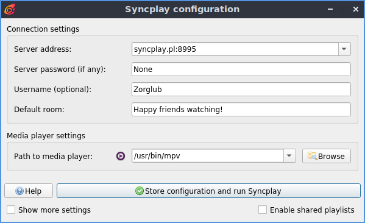
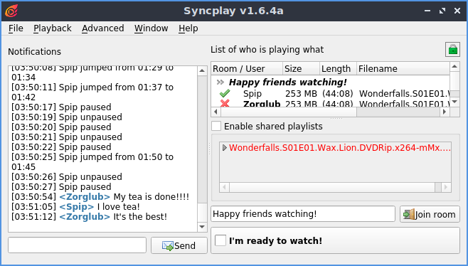

Watching Movies Remotely with Friends
This is a description of how to watch movies with friends remotely. This assumes you'll be watching your own media (i.e. both you and all your friends have a copy of the same media file, locally on your own computer). We'll be using the media player Mpv and Syncplay.
Zrajm,
Preparing
First off you'll need to install the relevant programs for your OS. Here are the relevant pages:
- Install Mpv (Note, as
of June 2020, make sure that you get version 0.32.0 of Mpv, as
newer versions will not work well with Syncplay – according
to the Syncplay website.)
Debian/Ubuntu etc. – Mpv is in the repos, so just run
apt install mpvand you're good to go. - Install
Syncplay.
Debian/Ubuntu etc. – Syncplay is not in the repositories (at least not on 20.04, Focal Fossa). The easiest way to run it is to download the
.AppImagefile, runchmod +x FILE.AppImageon it and then just execute it with./FILE.AppImage. - Make sure you all have the same copy of the movie you want to watch, on each of your computers. Fetching the movie from the same source, or sharing it among each other with SSH (or WinSCP if you happen to be on Windows), or using Dropbox or Sync might be a good idea.
Watching
Start Syncplay. Select one of the servers in the dropdown, and enter a username and a default room, then click "Store configuration and run Syncplay". Make sure all participants enter exactly the same server and room name (it's case sensetive!).

After you've connected, and if everything's working it should look like this:

The easiest way to load the video is to uncheck the "Enable shared playlists" video, and then drag-and-drop the file into the Mpv window (all user have to do this).
The checkbox "I'm ready to watch!" is used to indicate to the crowd that you're ready. If you ever pause the video, then this checkbox is automatically unchecked and everyone is notified of who is the offending pauser (the checkbox is automatically checked if you press play again).
There's also a chat function, you can either chat in the Syncplay window, or – at least with Mpv – you can even chat directly in the video by pressing enter and then typing stuff:
Happy watching!